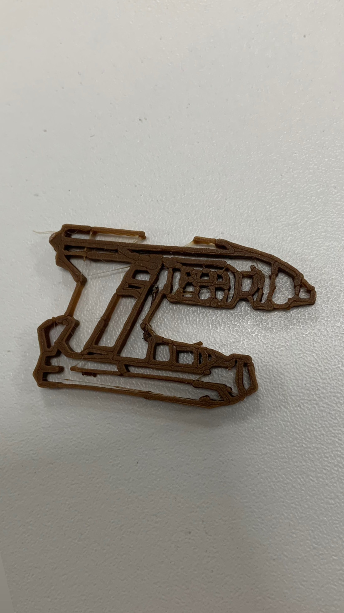
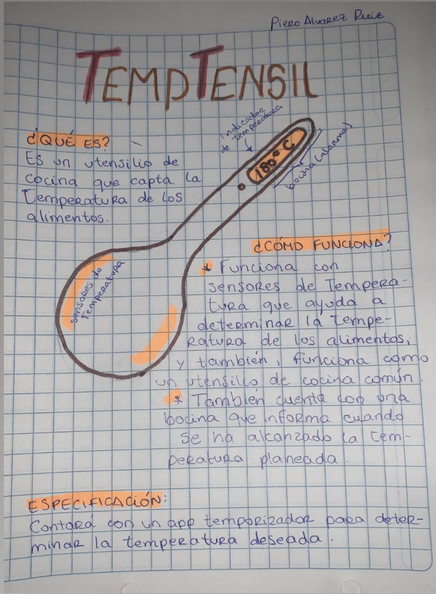

| Les cuento un poco sobre mí 😄. Me llamo Piero Alvarez y estudio Comunicación Audiovisual Multimedia en Toulouse Lautrec (curso el séptimo ciclo de la carrera). Soy barista en una cafetería a medio tiempo☕️. En mi carrera, me desempeño mucho en el área de post producción💻 y tengo experiencia en el desarrollo de programas de edición. | |
|  | Para el primer trabajo presencial, usamos la impresora 3D. Creamos un grupo aleatorio en donde, la primera misión fue crear un dibujo en 2D de lo que nos guste a los integrantes del grupo en común. Llegamos a la conclusión de que nos gustaba mucho Marvel, y decidimos hacer el arma de Star-Lord de "Guardianes de la Galaxia". Una vez dibujado, lo imprimimos en la impresora 3D y este fue el resultado. |
|  | Como propuesta personal, pensé en TempTensil: un utensilio de cocina que su principal función es servir como una clásica cuchara o espátula🥄, pero al mismo tiempo, toma la temperatura de los alimentos cocinándose para tener un control exacto de las temperaturas a las que deben llegar🌡️. |